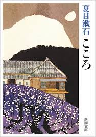
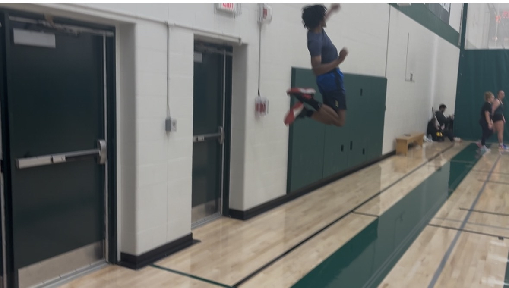

Music
I've been playing Bass and Guitar for 3 years, and have previously played instruments such as the Flute, Trombone, and Alto Saxophone. Music has always been a passion of mine and I find that playing the guitar is one way I get to express my creatiivity and relax. I also enjoy creating and recording my own music.

Languages
I've been learning Japanese for 5 years and Chinese for about 3, they are something I surround myself with every second I can and enjoy doing deeply. I enjoy using the language to make friends, enjoy media and read books.

Volleyball
I've been playing Volleyball for 6 years and joined the competitive league at Trent. I enjoy the team aspect and challange it brings to me, and is a more intricate sport than most people percieve.
